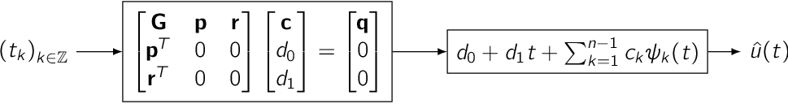
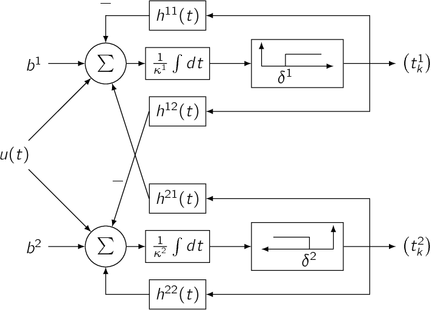
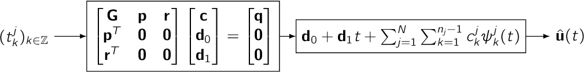

Integrate-and-Fire Neuron Machines¶
Single-Input Single-Output Machines¶
- Time Encoding Machine [2]
Encodes a bandlimited signal using an Integrate-and-Fire neuron. Leaky and ideal neuron models are supported.

- Time Decoding Machine [1]
Decodes a bandlimited signal encoded by an Integrate-and-Fire neuron using sinc kernels.

- Time Decoding Machine - Fast Approximation Method [4]
Decodes a bandlimited signal encoded by an Integrate-and-Fire neuron using a fast approximation method.

- Time Decoding Machine - Real-Time Decoder [10]
Decodes a bandlimited, arbitrarily long signal encoded by an Integrate-and-Fire neuron by stitching together blocks of data decoded by solving a Vandermonde system using the Björk-Pereyra Algorithm.

- Time Decoding Machine - Spline Interpolation Method [12]
Decodes a bandlimited signal encoded by an Integrate-and-Fire neuron using spline interpolation.

{kind=link}
Single-Input Multi-Output Machines¶
- Time Encoding Machine - SIMO Coupled IAF Encoder [12]
Encodes a finite energy signal encoded by with multiple coupled ON-OFF Integrate-and-Fire neurons.

{kind=link}
Multi-Input Single-Output Machines¶
- Time Decoding Machine - MISO IAF Decoder [7]
Decodes a bandlimited signal encoded by multiple Integrate-and-Fire neurons using sinc kernels.

- Time Decoding Machine - MISO Coupled IAF Decoder [12]
Decodes a finite energy signal encoded by multiple coupled ON-OFF Integrate-and-Fire neurons using spline interpolation.

{kind=link}
Multi-Input Multi-Output Machines¶
- Time Encoding Machine - MIMO Delayed IAF Encoder [12]
Encodes several finite energy signals encoded by multiple Integrate-and-Fire neurons with delays.

- Time Decoding Machine - MIMO Delayed IAF Decoder [12]
Reconstructs several finite energy signals encoded by multiple Integrate-and-Fire neurons with delays using spline interpolation.